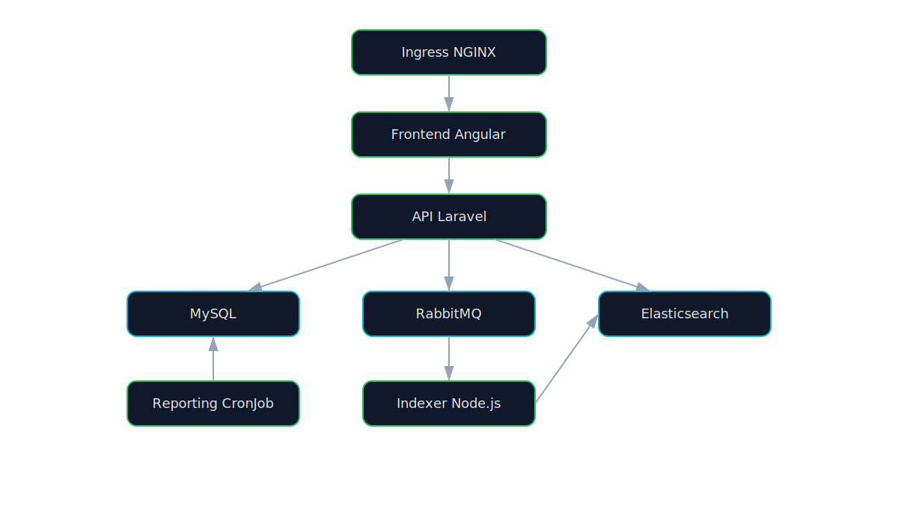

Documentation Scope
- Application internals: frontend, API, indexer, reporting.
- Kubernetes internals: manifests, Helm charts, scripts, RBAC, monitoring.
- A-to-Z runbook for deployment, validation, demos, rollback, and cleanup.
Architecture Diagram
Runtime Flow Diagram